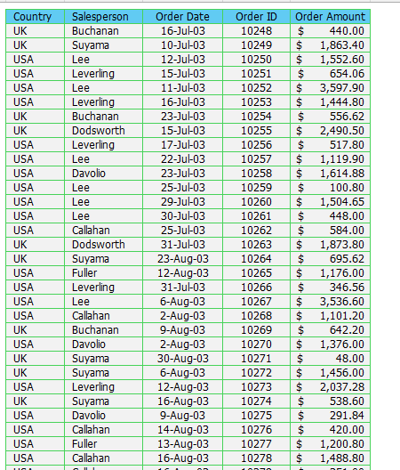
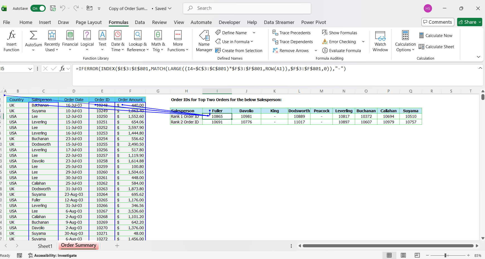
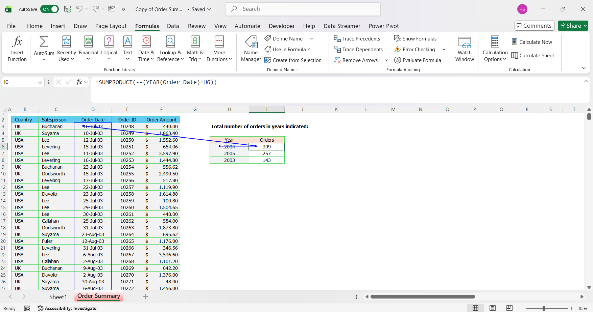
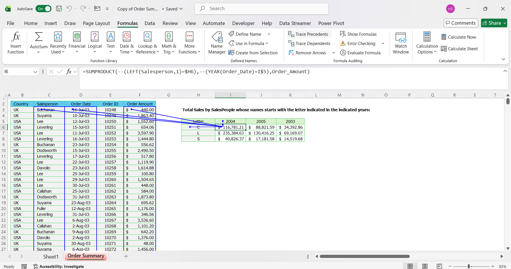

Portofolio Details
Sales order analysis using Microsoft Excel — order trends, top transactions, and salesperson performance. Analisis sales order menggunakan Microsoft Excel — tren pesanan, transaksi terbesar, dan kinerja salesperson.
Sales Order Analysis & Summary Dashboard
Project Overview
This project analyzes sales order data to extract meaningful insights related to top-value transactions, order volume by year, and total sales performance based on salesperson name initials. The analysis was conducted entirely using Microsoft Excel with advanced formulas and conditional logic.

Objectives
- Identify the top two highest-value orders for each salesperson
- Calculate the total number of orders for specific years
- Analyze total sales based on salesperson initials and selected years
Step-by-Step Analysis Process
Step 1
Order IDs for Top Two Orders per Salesperson
The first analysis identifies the Order IDs corresponding to the top two highest order amounts for each salesperson.
Excel Formula:
=IFERROR(
INDEX($E$3:$E$801,
MATCH(
LARGE((I4=$C$3:$C$801)*$F$3:$F$801, ROW(A1)),
$F$3:$F$801, 0)
), "-")

Formula Breakdown:
| Component | Explanation |
|---|---|
| (I4 = $C$3:$C$801) | Filters the dataset to only include records matching the selected salesperson. |
| * $F$3:$F$801 | Multiplies filtered results with order amounts, retaining only relevant sales values. |
| LARGE(..., ROW(A1)) | Extracts the 1st and 2nd largest order values dynamically. |
| MATCH(...) | Identifies the exact position of the selected order amounts in the dataset. |
| INDEX(...) | Returns the corresponding Order ID based on the matched position. |
| IFERROR() | Prevents errors when fewer than two orders exist for a salesperson. |
Outcome: Successfully identified the top two highest-value transactions for each salesperson, enabling quick recognition of high-impact sales.
Step 2
Total Number of Orders by Year
The second analysis calculates the total number of orders for specific years based on the order date.
Excel Formula:
=SUMPRODUCT(--(YEAR(Order_Date)=H12))

Formula Breakdown:
| Component | Explanation |
|---|---|
| YEAR(Order_Date) | Extracts the year from each order date. |
| =H12 | Filters orders by the selected year. |
| SUMPRODUCT(--()) | Converts TRUE/FALSE results into numeric counts. |
Outcome: Generated a clear comparison of order volume across different years, highlighting fluctuations in sales activity over time.
Step 3
Total Sales by Salesperson Initial and Year
The final analysis calculates total sales amounts for salespeople whose names start with a specific letter in selected years.
Excel Formula:
=SUMPRODUCT( --(LEFT(Salesperson,1)=$H20), --(YEAR(Order_Date)=I$19), Order_Amount)

Formula Breakdown:
| Component | Explanation |
|---|---|
| LEFT(Salesperson,1) | Extracts the first letter of each salesperson's name. |
| =$H20 | Filters by the selected initial (e.g., C, L, S). |
| YEAR(Order_Date)=I$19 | Filters by year. |
| SUMPRODUCT() | Sums the order amounts that meet all conditions. |
Outcome: Enabled grouped performance analysis based on salesperson initials and yearly trends.
Results & Insights
Top Two Orders per Salesperson
The analysis successfully identified the top two highest-value orders for each salesperson. Salespeople such as Fuller, Davolio, Dodsworth, Leverling, Buchanan, Callahan, and Suyama recorded two significant high-value orders. King and Peacock did not have qualifying top-ranked orders, indicating lower transaction values or limited order activity.
Number of Orders by Year
Total orders per year show noticeable fluctuation:
- 2004 → 399 orders (Highest)
- 2005 → 257 orders
- 2003 → 143 orders (Lowest)
Significant increase from 2003 to 2004, followed by a decline in 2005.
Total Sales by Initial Letter of Salesperson
| Initial | 2003 | 2004 | 2005 |
|---|---|---|---|
| C | $34,392.86 | $116,781.21 | $88,821.59 |
| L ⭐ | $69,169.07 | $235,384.63 | $130,416.25 |
| S | $14,519.68 | $40,826.37 | $17,181.58 |
Across all years, salespeople with initial "L" consistently generated the highest total sales.
Key Insights
| Insight | Detail |
|---|---|
| Peak Year: 2004 | 399 orders — strongest operational activity and market demand. |
| Sales Concentration | The "L" group dominates total sales consistently across all years. |
| Performance Disparity | In 2004, "L" generated more than 5× the revenue of "S". |
| Strategic Implications | Performance evaluation, incentive programs, targeted coaching, resource allocation. |
| Scalable Monitoring | SUMPRODUCT & Array Formulas enable future datasets to be tracked without manual filtering. |
Business Value
This analysis helps management quickly identify top-performing sales transactions, monitor yearly trends, and evaluate grouped sales performance. The approach reduces manual reporting and supports data-driven decision making.
Tools & Skills Used
- Microsoft Excel
- Array formulas & SUMPRODUCT
- Date and text-based data filtering
- Analytical problem-solving
Analisis Sales Order & Dashboard Ringkasan
Gambaran Proyek
Proyek ini menganalisis data sales order untuk menghasilkan wawasan bermakna terkait transaksi bernilai tertinggi, volume pesanan per tahun, dan kinerja penjualan berdasarkan inisial nama salesperson. Analisis dilakukan sepenuhnya menggunakan Microsoft Excel dengan rumus lanjutan dan logika kondisional.
Tujuan Analisis
- Mengidentifikasi dua pesanan bernilai tertinggi untuk setiap salesperson
- Menghitung total jumlah pesanan untuk tahun tertentu
- Menganalisis total penjualan berdasarkan inisial nama salesperson dan tahun yang dipilih
Proses Analisis Langkah demi Langkah
Langkah 1
Order ID untuk Dua Pesanan Teratas per Salesperson
Analisis pertama mengidentifikasi Order ID yang berhubungan dengan dua nilai pesanan tertinggi untuk setiap salesperson.
Rumus Excel:
=IFERROR(
INDEX($E$3:$E$801,
MATCH(
LARGE((I4=$C$3:$C$801)*$F$3:$F$801, ROW(A1)),
$F$3:$F$801, 0)
), "-")
Penjelasan Rumus:
| Komponen | Penjelasan |
|---|---|
| (I4 = $C$3:$C$801) | Memfilter dataset agar hanya mencakup data yang cocok dengan salesperson yang dipilih. |
| * $F$3:$F$801 | Mengalikan hasil filter dengan nilai pesanan, hanya menyimpan nilai penjualan yang relevan. |
| LARGE(..., ROW(A1)) | Mengambil nilai pesanan terbesar pertama dan kedua secara dinamis. |
| MATCH(...) | Mengidentifikasi posisi tepat dari nilai pesanan yang dipilih dalam dataset. |
| INDEX(...) | Mengembalikan Order ID yang sesuai berdasarkan posisi yang ditemukan. |
| IFERROR() | Mencegah error ketika salesperson memiliki kurang dari dua pesanan. |
Hasil: Berhasil mengidentifikasi dua transaksi bernilai tertinggi untuk setiap salesperson, memungkinkan pengenalan cepat terhadap penjualan berdampak tinggi.
Langkah 2
Total Jumlah Pesanan per Tahun
Analisis kedua menghitung total jumlah pesanan untuk tahun tertentu berdasarkan tanggal pesanan.
Rumus Excel:
=SUMPRODUCT(--(YEAR(Order_Date)=H12))
Penjelasan Rumus:
| Komponen | Penjelasan |
|---|---|
| YEAR(Order_Date) | Mengekstrak tahun dari setiap tanggal pesanan. |
| =H12 | Memfilter pesanan berdasarkan tahun yang dipilih. |
| SUMPRODUCT(--()) | Mengubah hasil TRUE/FALSE menjadi hitungan numerik. |
Hasil: Menghasilkan perbandingan volume pesanan yang jelas antar tahun, menyoroti fluktuasi aktivitas penjualan dari waktu ke waktu.
Langkah 3
Total Penjualan berdasarkan Inisial Salesperson dan Tahun
Analisis terakhir menghitung total penjualan untuk salesperson yang namanya diawali huruf tertentu pada tahun yang dipilih.
Rumus Excel:
=SUMPRODUCT( --(LEFT(Salesperson,1)=$H20), --(YEAR(Order_Date)=I$19), Order_Amount)
Penjelasan Rumus:
| Komponen | Penjelasan |
|---|---|
| LEFT(Salesperson,1) | Mengambil huruf pertama dari nama setiap salesperson. |
| =$H20 | Memfilter berdasarkan inisial yang dipilih (misal: C, L, S). |
| YEAR(Order_Date)=I$19 | Memfilter berdasarkan tahun. |
| SUMPRODUCT() | Menjumlahkan nilai pesanan yang memenuhi semua kondisi. |
Hasil: Memungkinkan analisis kinerja berkelompok berdasarkan inisial salesperson dan tren tahunan.
Hasil & Wawasan
Dua Pesanan Teratas per Salesperson
Analisis berhasil mengidentifikasi dua pesanan bernilai tertinggi untuk setiap salesperson. Salesperson seperti Fuller, Davolio, Dodsworth, Leverling, Buchanan, Callahan, dan Suyama mencatatkan dua pesanan bernilai signifikan. King dan Peacock tidak memiliki pesanan peringkat teratas, mengindikasikan nilai transaksi lebih rendah atau aktivitas terbatas.
Jumlah Pesanan per Tahun
Total pesanan per tahun menunjukkan fluktuasi yang mencolok:
- 2004 → 399 pesanan (Tertinggi)
- 2005 → 257 pesanan
- 2003 → 143 pesanan (Terendah)
Peningkatan signifikan dari 2003 ke 2004, diikuti penurunan pada 2005.
Total Penjualan berdasarkan Inisial Salesperson
| Inisial | 2003 | 2004 | 2005 |
|---|---|---|---|
| C | $34,392.86 | $116,781.21 | $88,821.59 |
| L ⭐ | $69,169.07 | $235,384.63 | $130,416.25 |
| S | $14,519.68 | $40,826.37 | $17,181.58 |
Di semua tahun, salesperson berinisial "L" secara konsisten menghasilkan total penjualan tertinggi.
Insight Utama
| Insight | Detail |
|---|---|
| Tahun Puncak: 2004 | 399 pesanan — aktivitas operasional dan permintaan pasar paling kuat. |
| Konsentrasi Penjualan | Kelompok "L" mendominasi total penjualan di semua tahun. |
| Kesenjangan Kinerja | Pada 2004, "L" menghasilkan lebih dari 5× pendapatan "S". |
| Implikasi Strategis | Evaluasi kinerja, program insentif, pelatihan terarah, alokasi sumber daya. |
| Pemantauan Skalabel | SUMPRODUCT & Array Formula memungkinkan pelacakan dataset masa depan tanpa filter manual. |
Nilai Bisnis
Analisis ini membantu manajemen mengidentifikasi transaksi penjualan terbaik, memantau tren tahunan, dan mengevaluasi kinerja penjualan berkelompok. Pendekatan ini mengurangi pelaporan manual dan mendukung pengambilan keputusan berbasis data.
Alat & Skill yang Digunakan
- Microsoft Excel
- Array Formula & SUMPRODUCT
- Filter data berbasis tanggal dan teks
- Pemecahan masalah analitis